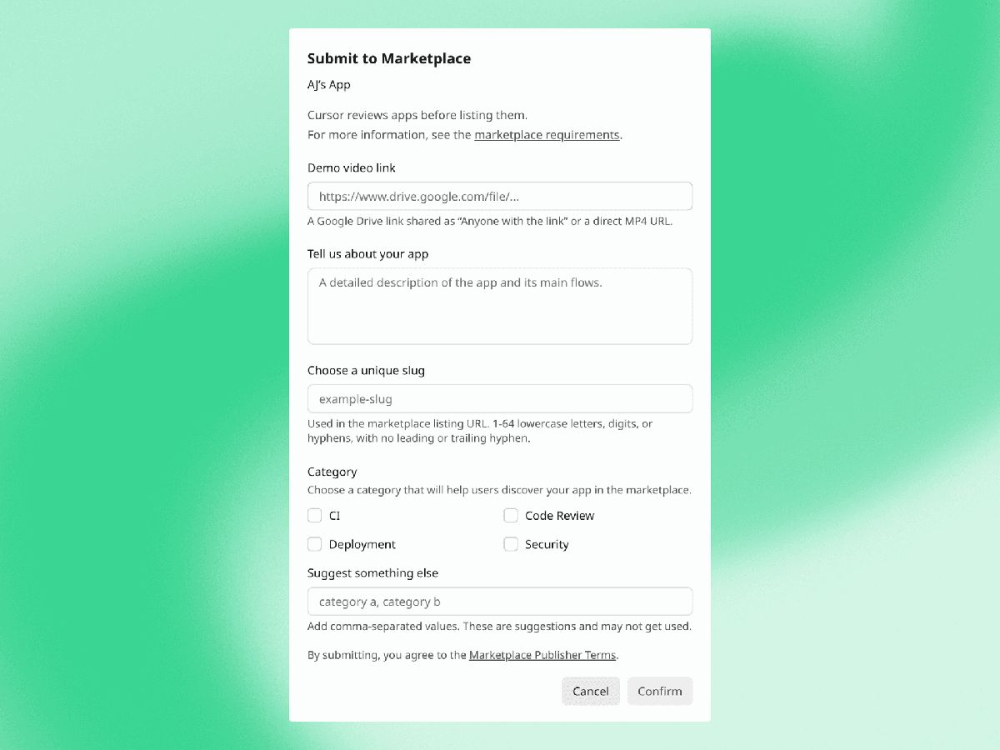
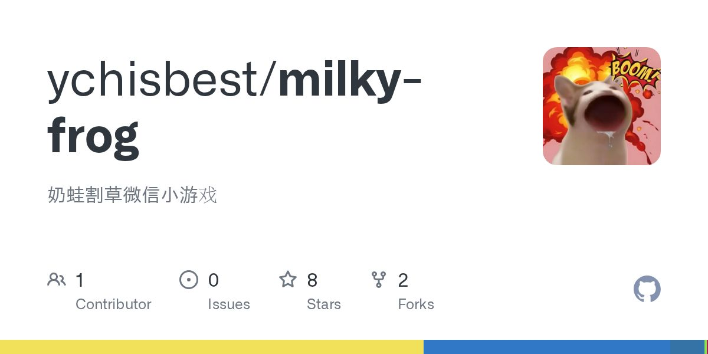
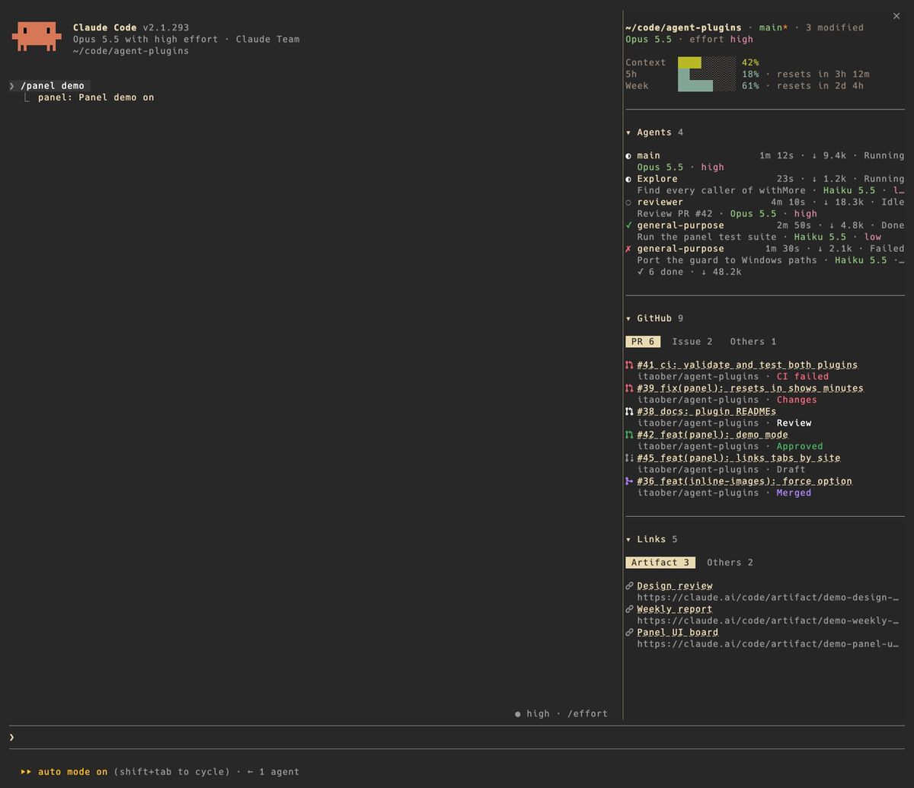

Cursor 发布 Voice Chat with Agents。

原文正文要点
输入框为空且 Agent 空闲时可点波形按钮开始通话；编码 Agent 会边工作边口头汇报；iOS 可用「Hey Siri, call Cursor」。Changelog（Nov 6, 2026）
面向 AI 初学者的每日资讯：要闻、工具、项目与需求动态。
最新一期
时间窗口：11-06 08:15 到 11-07 08:15（台北时间）。周末更新偏少，每条均核对正文与日期。
输入框为空且 Agent 空闲时可点波形按钮开始通话；编码 Agent 会边工作边口头汇报；iOS 可用「Hey Siri, call Cursor」。Changelog（Nov 6, 2026）
帖子围绕 JetBrains 年度报告与使用习惯变化，约 65 条回复，有人仍用 IDE 看代码与 Git，也有人转向更轻量编辑器。V2EX（11-06 08:54）
重点关注与第三方服务的连接，并扩大对方在 Daybreak Red 下的模型访问。官方（11-06）

与听写功能分开——听写只把语音转成输入框文字，Voice Chat 是双向对话。Changelog
终端中 MCP 任务可立即转入后台并在结束时回传结果；面向网关用户的 /usage 补充今日、本周与本月花费；新增 /claude-api latency-optimize 用于定位 API 等待瓶颈。Release（11-07 01:04）
量子位实测覆盖灵感到剧本、资产库、分镜、智能预演与局部重拍；文中写 Seedance 2.5 单秒价格可低至 0.15 元，并介绍机构伙伴计划。量子位（11-06 11:20）

作者用 Claude Code 完成割草小游戏「奶蛙」，并以模拟器调难度；文中提到当前微信小游戏发布流程有所简化。开源仓库：milky-frog。V2EX（11-06 15:40）
按约 20 条一批调用大模型，要求只返回含分类、情绪、是否紧急的 JSON；作者记录了批大小、枚举约束、去掉代码块标记与网络重试等注意点。电鸭（11-07 07:53）

Claude Code 侧边栏 panel；imgcap 指定大小压图（在线）；google/skills（可用 npx skills add google/skills 安装）
加拿大团队 STHEtic AI 的 iPad 面诊产品，国内远程，工作日每天约 3 小时，薪酬约 8,000–12,000 元/月；要求能拆需求，并用 Codex 等 AI 编程工具完成常规功能与自测，投递材料见帖内说明。电鸭（11-07 02:02）
侧重 GPU 推理优化与多机多卡部署等，经验约 3–5 年，薪资约 30–50k，简历投递方式见帖内说明。V2EX（11-06 20:57）

电鸭网页出现验证码，改用接口读取正文；Product Hunt「Cursor Craft」为 macOS 鼠标指针主题，与 Cursor IDE 无关；Codex 仅有无说明的 alpha 预发布；Anthropic News 窗口内无新稿；Reddit r/vibecoding 与 r/ClaudeAI、即刻、AIbase、部分 Newsletter 本次未逐条细读。